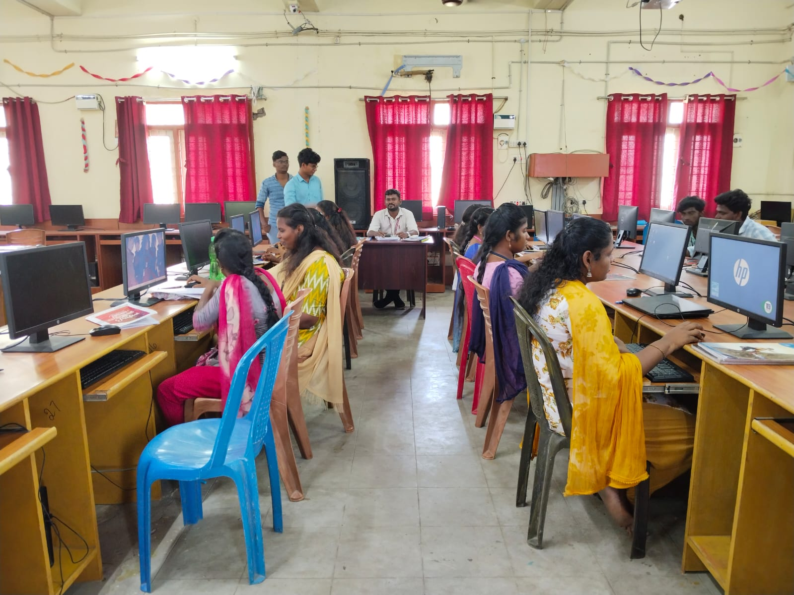

The Computer Science Lab is well equipped with 60 Computers with the latest configuration with LAN connection, printers and scanner and four Projectors to help the students to develop their programming skills. It also has a stand alone system with the internet connection
The department has a well furnished Hardware Lab with more than 30 - 8085-Microprocessor kits, 25 digital logic trainer kits, etc to train and provide the students an insight about the internal working of a processor and the various logic components. The Department also provides opportunities for overall development of its students by conducting various academic competitions.
